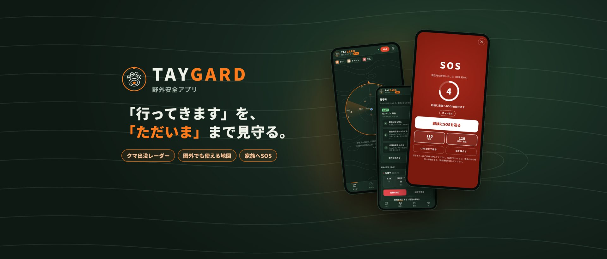
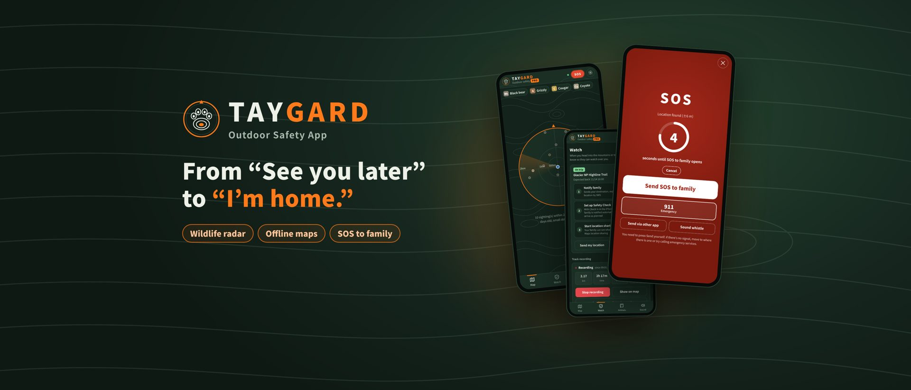

TAYGARD（タイガード）は、山や川へ出かける人と、その家族のための野外安全アプリです。
出没レーダー・マップ
近くのクマなどの出没を、方角と距離で表示。自治体の公開データを自動で反映します。
動物ごとの対処法
出会わないための工夫、出会ったときの行動、してはいけないこと。季節カレンダー付き。
撃退音・笛・鈴
動物ごとの音域の音やホイッスル。マナーモードでも鳴ります。
※効果には個体差があり、追い払いを保証するものではありません
家族へSOS
現在地付きのメッセージをすぐ家族へ。110番・119番へもその場で電話できます。
圏外でも使える地図（Pro）
出かける前に地図を保存すれば、電波のない山の中でも表示できます。
見守り・移動の記録（Pro）
入山・下山を家族に連絡。歩いた道すじを記録してGPXで共有。
日本語・英語に対応。対応地域：日本・北米・欧州・豪州

TAYGARD is an outdoor safety app for people heading into the mountains and rivers — and for the families waiting for them at home.
Sighting radar and map
See nearby wildlife sightings by direction and distance, with official and open data updated automatically.
What to do, animal by animal
How to avoid encounters, what to do if you meet one, and what never to do. With a seasonal calendar.
Deterrent sounds, whistle, bell
Sounds tuned for each animal and a whistle. Plays even in silent mode.
※Effects vary. Deterrence is not guaranteed.
SOS to family
Send your family a message with your location in seconds, or call your local emergency number.
Offline maps (Pro)
Save maps before you go and view them where there is no signal.
Watch and track recording (Pro)
Let family know when you set out and get back. Record your route and share it as GPX.
Available in English and Japanese. Regions: Japan, North America, Europe, Australia.